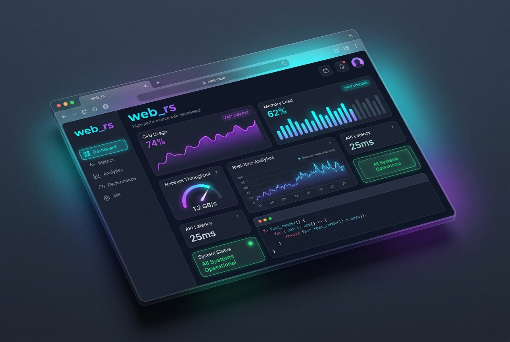
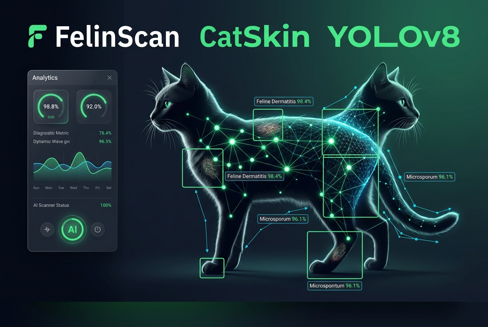
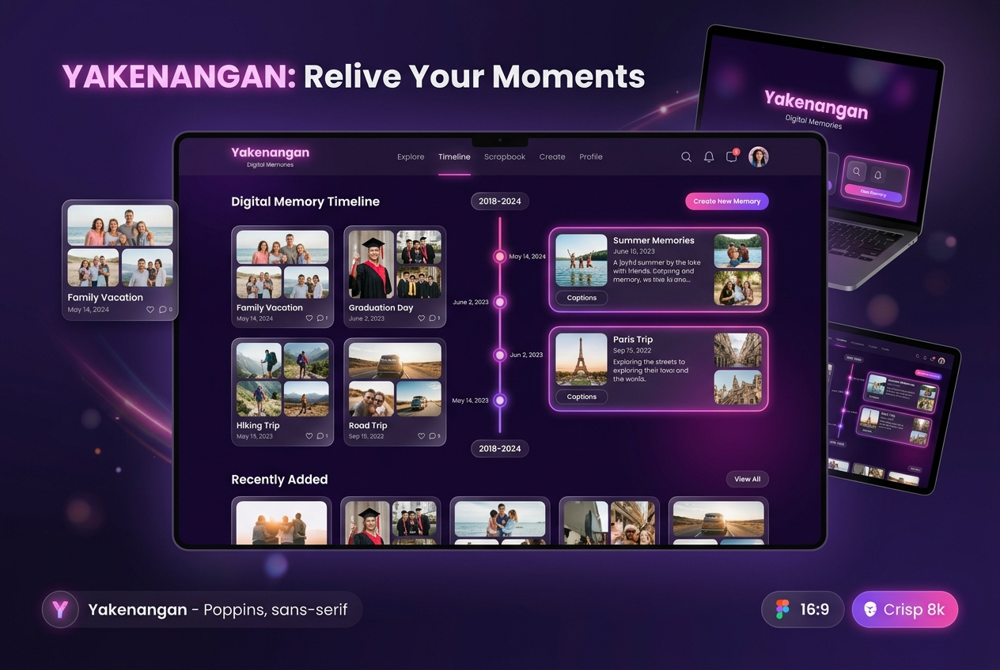
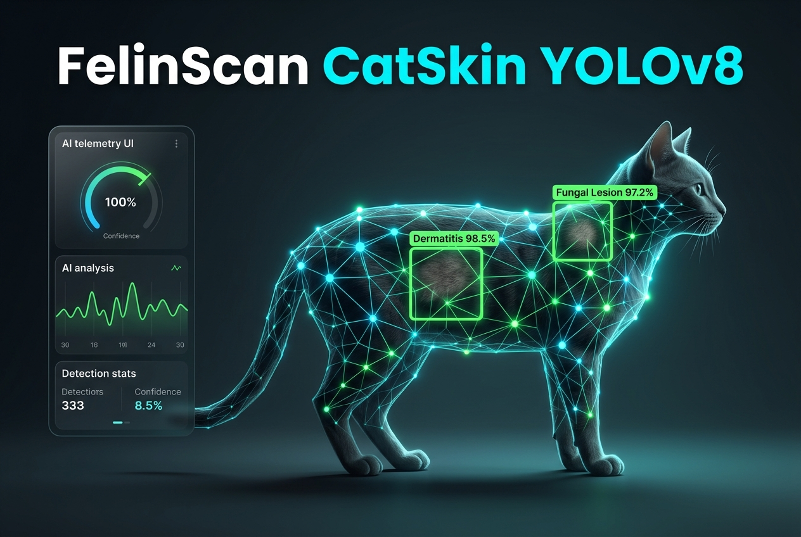
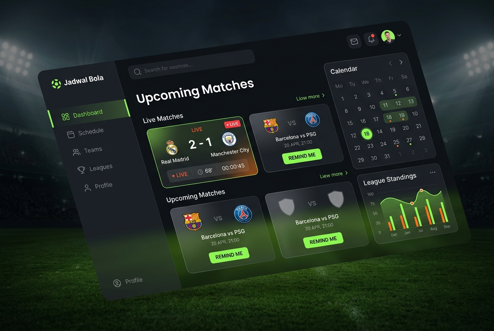
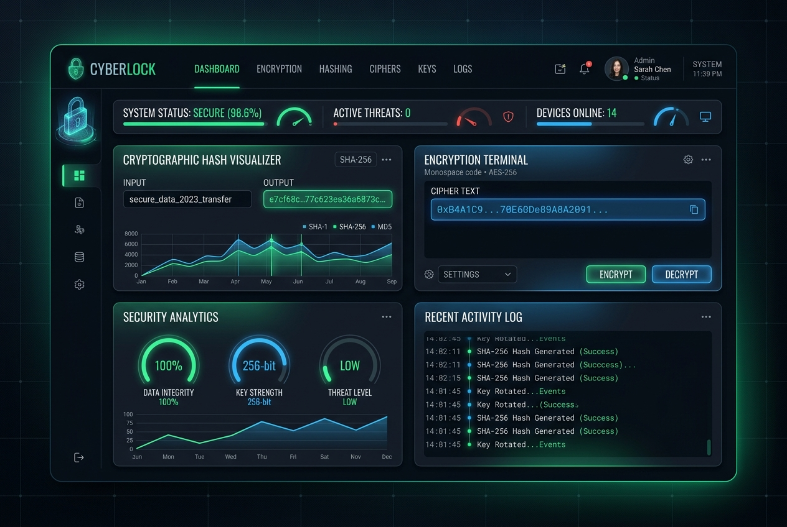

👋 Halo, saya
Passionate developer yang menciptakan pengalaman digital yang luar biasa. Mengubah ide menjadi kenyataan melalui kode yang bersih dan desain yang elegan.
Halo! Saya Muhamad Dyas Nurcahya, seorang developer yang bersemangat dari Bogor, Jawa Barat, Indonesia. Saya memiliki pengalaman lebih dari 3 tahun dalam pengembangan web dan aplikasi.
Saya menikmati tantangan memecahkan masalah kompleks dan mengubahnya menjadi solusi yang sederhana, indah, dan intuitif. Ketika saya tidak sedang coding, Anda bisa menemukan saya sedang mengeksplor teknologi baru atau bermain game.

Website yang dibangun menggunakan framework Astro untuk performa yang cepat dan optimal.

Aplikasi deteksi penyakit kulit kucing menggunakan model YOLOv8 untuk klasifikasi gambar.

Template website kenangan yang indah, dibangun dengan HTML murni sebagai public template.

Versi awal aplikasi deteksi penyakit kulit kucing dengan teknologi computer vision YOLOv8.
Website Yakenangan — platform kenangan digital yang dibangun dengan CSS modern.

Aplikasi jadwal pertandingan bola yang interaktif menggunakan HTML, CSS, dan JavaScript.

Aplikasi enkripsi, dekripsi, dan hashing yang dibangun dengan Flask Python untuk keamanan data.
Saya selalu terbuka untuk peluang baru, proyek menarik, atau sekadar ngobrol tentang teknologi. Jangan ragu untuk menghubungi saya!